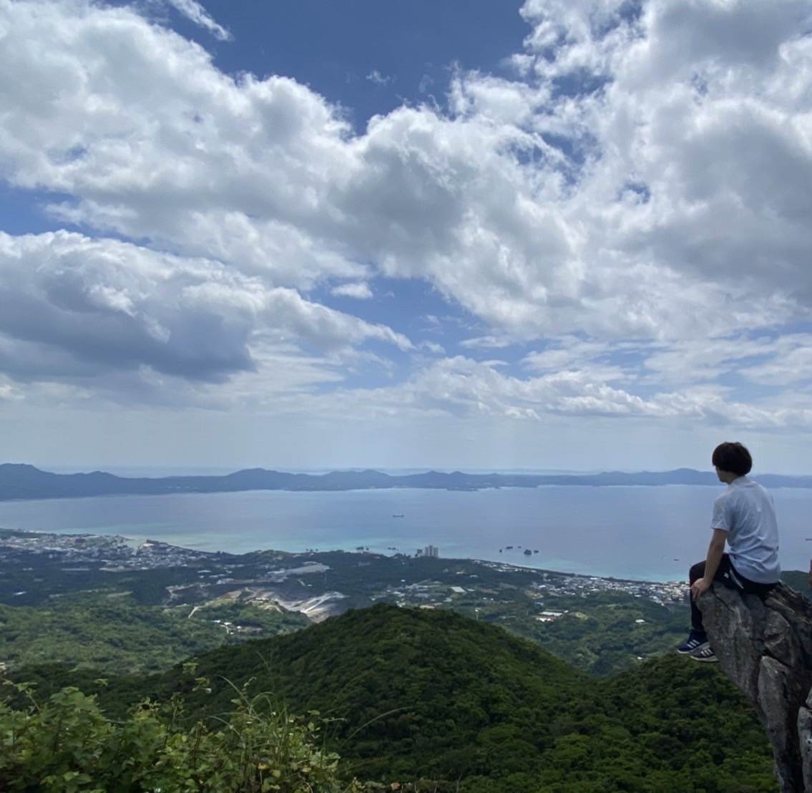

My Okinawa BLOG
ホーム
観光地
ご当地グルメ
宿泊所
メッセージ
メッセージ
ホーム > メッセージ
ここでは私の5年間の日常体験も込めて、
沖縄へ来る観光者、移住者へメッセージを送りたいと思います。
まず、ここに来る前に伝えたいこと、、、
気温は12~2月以外は20℃超えるため、その期間以外は夏服を着ることオススメします！
また環境はとても良く、自然が豊富です。沖縄は島ということもあり、海と森に囲まれています！ 正直、ここの住み心地を一言で言い表すと.....
とても住みやすい！！
のどかでウチナーンチュ（沖縄人）はみんな優しく、しかも、
マイペース
だと感じます。東京や大阪に行けば、駅などの通勤ラッシュがあり、せっせと早歩きする人を多く見るが、沖縄ではそんなのがありません！時間に厳しくなく、自分のペースがあるため、私が仕事中もこんなギリギリに来るの！？と思うぐらい出勤時間１,２分前に来ることがあるです（笑）私は熊本出身であり、始めはこの生活に違和感はありました。しかし、次第にこの生活に溶け込んでいくことができ、この生活が私に適していることに気がつきました。
他にもいい点として、
・花粉がない！
・島の野菜、フルーツの価格が安い！
・どこに住んでも海までの距離が近い！
・家賃が安い！
などがあります！！

結論から言うと、
沖縄は本島とは全く違う文化を体験することができると考えます！
もっと大袈裟に言うと、東南アジアに来たような感じです。以前、私はフィリピンやタイに留学、旅行として行ったことがありますが、なんとも言えないのどかさがあり、それが沖縄にとても似ていると感じました。確かに家賃が安い分、給料も東京などと比べると安いですが、副業次第ではとても安定かつ楽しい生活ができるのではないでしょうか？
もちろん沖縄で苦労することはあります。でもそれよりも楽しい思い出はたくさん作れます！
なんくるないさ〜
では沖縄で待ってまーす！
記事
沖縄【実録】失敗・挫折・ホームシックいろいろ味わった7年間
2022.10.17